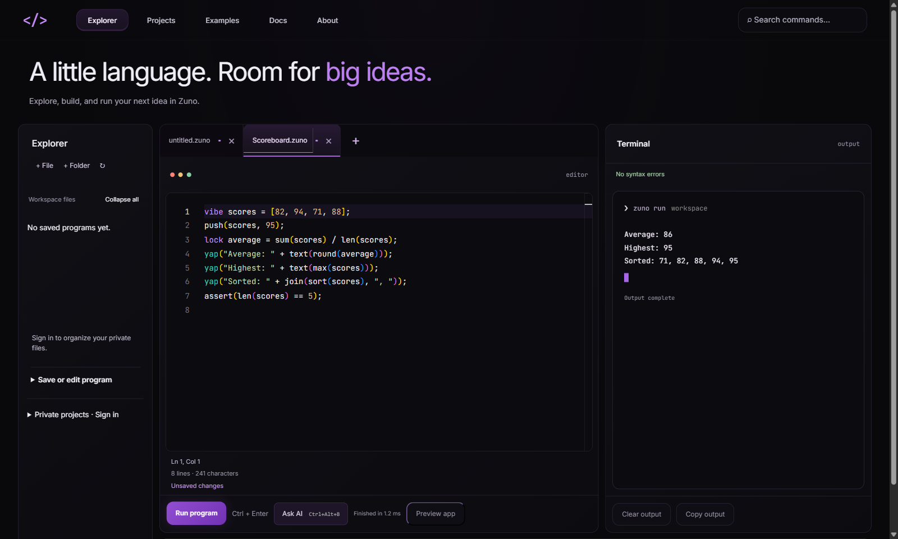

Terminal runtime
Run and check local projects from your terminal.
Download runtime .tgz · Node.js 20+ requiredA language for people who like making things
Meet Zuno: a playful programming language you can write in the browser, run in your terminal, and bring into your own editor.
Now with the Zuno Language Server. Windows, macOS, and Linux.
vibe idea = "something good";
yap(idea);❯ something goodZuno's playful words sit beside familiar ones. Start small and grow into functions, arrays, dictionaries, classes, modules, and built-in libraries.
vibechangeable variablelockconstant bindingcookfunctionyeetreturn a resultyapprint a valuefr / captrue / falseWrite in Monaco, switch between files, run programs, inspect output, and preview small interactive apps. AI help is optional and uses your own Groq key.

Install Node.js 20+, then grab Zuno 0.7.0. The same runtime works on Windows, macOS, and Linux. No source checkout or database needed.
Run and check local projects from your terminal.
Download runtime .tgz · Node.js 20+ requiredHover, signatures, formatting, tests, autocomplete, definitions and rename.
Download extension .vsix · Language server and runtime includedA project and examples to open, edit, and run.
Download starter .tgz · Use with the terminal runtimenpm install --global ./zuno-runtime.tgz
zuno init my-first-app
cd my-first-app
zuno run
zuno checkRun the install command in the folder containing the downloaded archive. Then create a project anywhere. Zuno finds its entry from zuno.json and resolves imports inside the project.
For the extension, open Extensions → … → Install from VSIX in VS Code or Cursor, and select the downloaded file. Reload the editor, then use Ctrl+Space, F12, and F2 in a .zuno file.
The public site is a download guide. Run the browser studio locally for editing and saving files; account-backed storage also needs MongoDB.
Full install guide ↗The source, examples, language guide, and local editor tools are all in the repository.